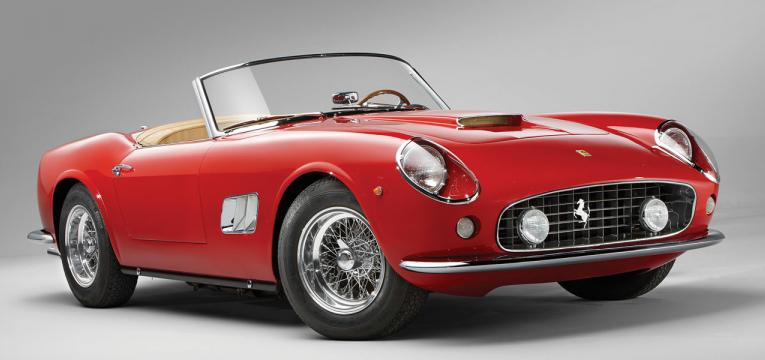

Os Carros Antigos ou Clássicos Mais Raros do Mundo
5 - Tucker ’48
Também conhecido com Tucker Torpedo, tem o nome do seu criador: Preston Tucker. Este pequeno
fabricante de automóveis
apenas produziu 51 unidades deste modelo antes da empresa encerrar, em março de 1949, devido a
uma acusação de fraude
na bolsa. Apesar de Preston Tucker ser considerado inocente em tribunal, não conseguiu
recuperar
a empresa. Por essa
razão, os 51 exemplares do Tucker ’48 são raros, pois foram os únicos a ser produzidos. Hoje,
um Tucker ’48 está
avaliado em aproximadamente 1,1 milhões de euros.
4 - 1954 Oldsmobile F-88
É o modelo de sonho de quase todos os colecionadores de carros antigos. O 1954 Oldsmobile F-88
foi construído em 1954 e
tem um design elegante e luxuoso. Mas o que faz dele um carro tão atraente é o motor V8 de 250
cavalos e a carroçaria
ser em fibra de vidro.Foram produzidos quatro exemplares deste modelo e um está em exposição no
Gateway Colorado
Automobile Museum, nos EUA. Recentemente, um destes exemplares foi vendido em leilão por 3,2
milhões de euros.
3 - Aston Martin Bulldog
O Bulldog, com um motor turbo V8, 5,3 L de 600 cavalos, tem um aspeto estranho, com as portas
asa-de-gaivota, que faz
lembrar o DeLorean da trilogia do filme “Regresso ao Futuro”. A Aston Martin produziu apenas 25
exemplares, em 1979. Em
2011, foi vendido um Bulldog por 1,2 milhões de euros.
2 - Ferrari 250 GT Spyder Convertible

Um dos carros antigos mais raros e extraordinários é o descapotável Ferrari 250 GT Spyder, pois
só existe um exemplar
desta versão. O proprietário do Ferrari 250 GT Spyder descapotável é um colecionador de Nova
Iorque, que se chama Bob
Lee, e que comprou o carro em 1956 por 9500 dólares. Hoje, estima-se que o Ferrari esteja
avaliado em 9,3 milhões de
euros.
1 - Rolls-Royce 15HP
O Rolls-Royce 15HP é um dos carros mais raros, antigos e caros do mundo, pois foi um dos
primeiros veículos fabricado
por Charles Rolls e Henry Royce, em 1904, em Manchester, no Reino Unido. Foram apenas
produzidos seis exemplares, mas
só existe um que está em museus e exposições itinerantes pelo mundo. O primeiro veículo da
fabricante de automóveis de
luxo está avaliado para efeitos de seguro em 32,5 milhões de euros.